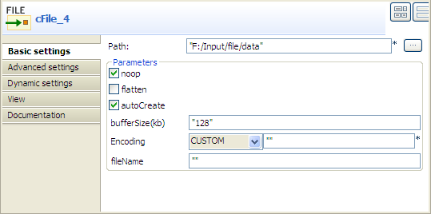
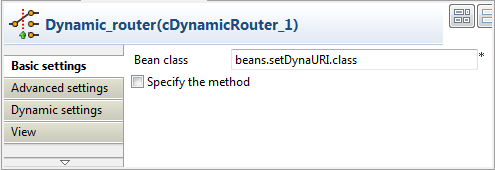
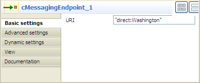
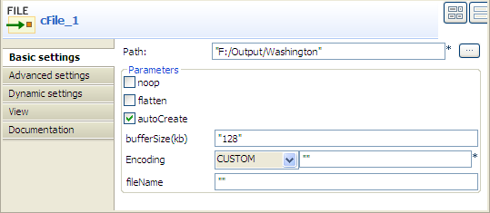
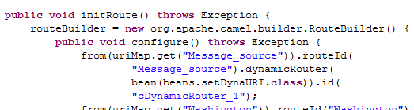

|
Component Family |
Routing | |
|
Function |
cDynamicRouter allows you to route messages while avoiding the dependency of the router on all possible destinations. | |
|
Purpose |
cDynamicRouter is used to route a message or messages to different endpoints on specified conditions. | |
|
Basic settings |
Bean class |
Enter the name of the bean class to be used for the dynamic router. |
| Specify the method | Select this check box to specify the method to be used which is defined in the bean class. | |
|
Usage |
cDynamicRouter is used as a middle or end component in a Route. | |
|
Limitation |
n/a | |
In this scenario, three file messages containing people information are routed to different endpoints according to the city names they contain.
The following is an extract of the example XML files used in this use case:
Washington.xml:
<people>
<person>
<firstName>Pierre</firstName>
<lastName>Dubois</lastName>
<city>Washington</city>
</person>
</people>
London.xml:
<people>
<person>
<firstName>Ellen</firstName>
<lastName>Ripley</lastName>
<city>London</city>
</person>
</people>
Beijing.xml:
<people>
<person>
<firstName>Nicolas</firstName>
<lastName>Yang</lastName>
<city>Beijing</city>
</person>
</people>
A predefined Java bean, setDynaURI, is called in this use case to return endpoint URIs according to the city name contained in each message, so that the message containing the city name Washington will be routed to endpoint Washington and so forth.
For more information about creating and using Java Beans, see ???.
package beans;
import org.apache.camel.Exchange;
import org.apache.camel.Header;
import org.w3c.dom.Document;
import org.w3c.dom.Element;
import org.w3c.dom.NodeList;
public class setDynaURI {
public String setURI(Document document,
@Header(Exchange.SLIP_ENDPOINT) String previous) {
if(previous!=null){
return null;
}
NodeList cities = document.getDocumentElement().getElementsByTagName(
"city");
Element city = (Element) cities.item(0);
String textContent = city.getTextContent();
return "direct:"+textContent;
}
}

From the Palette, expand the Messaging folder. Select and drop four cFile and three cMessagingEndpoint components onto the design workspace.
Expand the Routing folder. Select the cDynamicRouter component and drop it onto the design workspace.
Right-click a cFile component, select Row > Route in the contextual menu and click the cDynamicRouter component.
Repeat this operation to connect each of the cMessagingEndpoint component to a cFile component shown in the above screenshot.
Double-click the input cFile component to display its Component view. In this use case, simply specify the input file path and select the noop check box and leave the other parameters as they are.
Double-click the cDynamicRouter component to display its Component view.
In the Bean class field, type in the name of the predefined Java bean. Leave the Specify the method check box unselected as there is only one method in the Java bean.
Double click the first cMessagingEndpoint component to display its Component view, and type in the URI in the URI field for the destination of your message.
Here, we want to use this component to retrieve the message routed to the URI direct:Washington, as shown below.
Repeat this step to set the endpoint URIs for the other two cMessagingEndpoint components: direct:London and direct:Beijing respectively.
Double click the first output cFile component to display its Component view. Here, we simply specify the output file path and leave the other parameters as they are.
Repeat this step to specify the output file path for the other two cFile components, to save the files routed to the connected endpoints London and Beijing respectively.
Press Ctrl+S to save your Route.
Click the Code tab at the bottom of the design workspace to have a look at the generated code.
As shown in the code, the incoming message
fromthe endpointcFile_4is routed by.dynamicRouterto different endpoints and thenfromeach of these endpoints.tothe target endpoints.Click the Run view to display it and click the Run button to launch the execution of your Route.
You can also press F6 to execute it.
RESULT: The source files are routed and written to the directories containing the city names respectively.